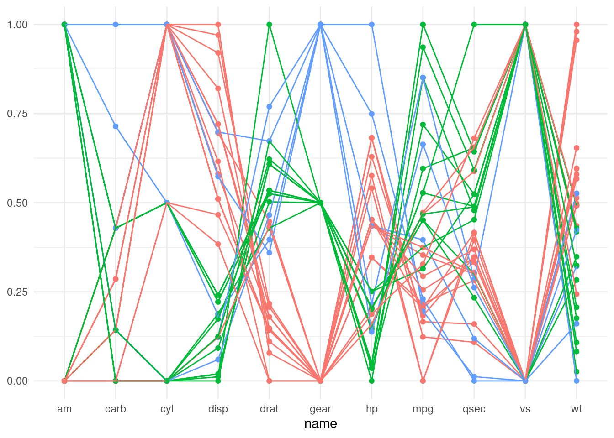
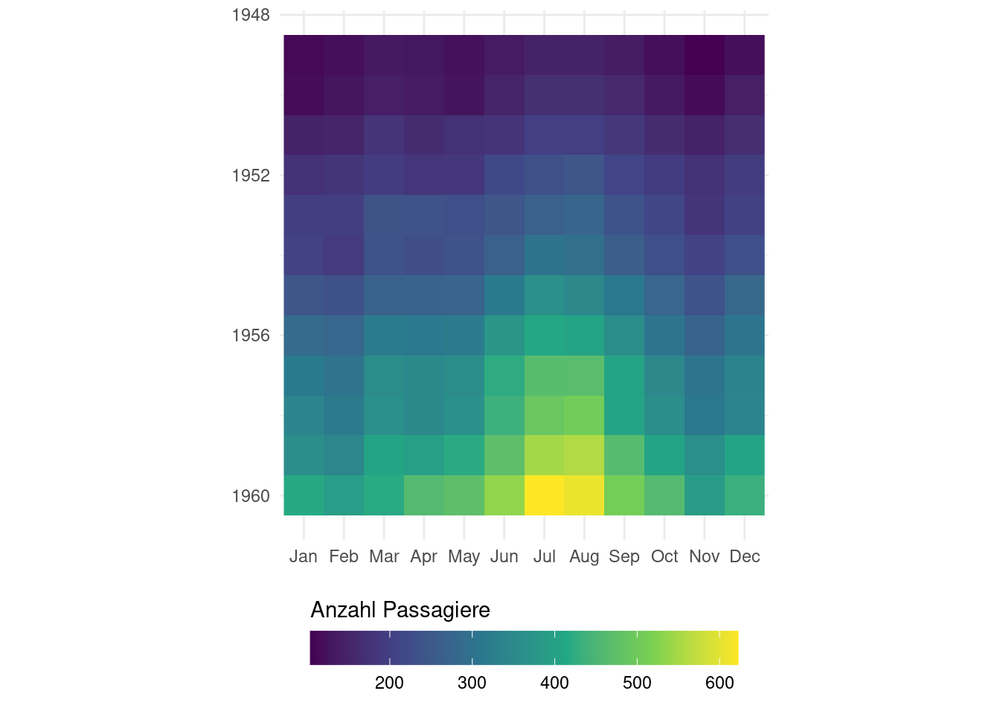

Infovis 2: Übung B
In dieser Übung bauen wir einige etwas unübliche Plots aus der Vorlesung nach. Dafür verwenden wir Datensätze, die in R bereits integriert sind. Eine Liste dieser Datensätze findet man hier oder mit der Hilfe ?datasets.
Dazu verwenden wir nach wie vor ggplot2, aber mit einigen Tricks.
library(dplyr)
library(tidyr)
library(ggplot2)Aufgabe 1: Parallel coordinate plots
Erstelle einen parallel coordinate plot. Dafür eignet sich der integrierte Datensatz mtcars. Extrahiere die Fahrzeugnamen mit rownames_to_column.
Zudem müssen die Werte jeweiles auf eine gemeinsame Skala normalisiert werden. Hierfür kannst du die Funktion scales::rescale verwenden.
mtcars2 <- mtcars %>%
tibble::rownames_to_column("car") %>%
pivot_longer(-car)
mtcars2 <- mtcars2 %>%
group_by(name) %>%
mutate(value_scaled = scales::rescale(value))| mpg | cyl | disp | hp | drat | wt | qsec | vs | am | gear | carb | |
|---|---|---|---|---|---|---|---|---|---|---|---|
| Mazda RX4 | 21.0 | 6 | 160 | 110 | 3.90 | 2.620 | 16.46 | 0 | 1 | 4 | 4 |
| Mazda RX4 Wag | 21.0 | 6 | 160 | 110 | 3.90 | 2.875 | 17.02 | 0 | 1 | 4 | 4 |
| Datsun 710 | 22.8 | 4 | 108 | 93 | 3.85 | 2.320 | 18.61 | 1 | 1 | 4 | 1 |
| Hornet 4 Drive | 21.4 | 6 | 258 | 110 | 3.08 | 3.215 | 19.44 | 1 | 0 | 3 | 1 |
| Hornet Sportabout | 18.7 | 8 | 360 | 175 | 3.15 | 3.440 | 17.02 | 0 | 0 | 3 | 2 |
| Valiant | 18.1 | 6 | 225 | 105 | 2.76 | 3.460 | 20.22 | 1 | 0 | 3 | 1 |
So sieht der fertige Plot aus:
mtcars2 <- mtcars2 %>%
group_by(car) %>%
mutate(gear = value[name == "gear"])
ggplot(mtcars2, aes(name, value_scaled, group = car, color = factor(gear))) +
geom_point() +
geom_line() +
theme_minimal() +
theme(legend.position = "none", axis.title.y = element_blank())
Aufgabe 2: Polar Plot mit Biber Daten
Polar Plots eignen sich unter anderem für Daten, die zyklischer Natur sind, wie zum Beispiel zeitlich geprägte Daten (Tages-, Wochen-, oder Jahresrhythmen). Aus den Beispiels-Datensätzen habe ich zwei Datensätze gefunden, die zeitlich geprägt sind:
Beide Datensätze müssen noch etwas umgeformt werden, bevor wir sie für einen Radialplot verwenden können. In Aufgabe 2 verwenden wir die Biber-Datensätze, in der nächsten Aufgabe (3) die Passagier-Daten.
Wenn wir die Daten von beiden Bibern verwenden wollen, müssen wir diese noch zusammenfügen:
beaver1_new <- beaver1 %>%
mutate(beaver = "nr1")
beaver2_new <- beaver2 %>%
mutate(beaver = "nr2")
beaver_new <- rbind(beaver1_new,beaver2_new)Zudem müssen wir die Zeitangabe noch anpassen: Gemäss der Datenbeschreibung handelt es sich bei der Zeitangabe um ein sehr programmier-unfreundliches Format. 3:30 wird als “0330” notiert. Wir müssen diese Zeitangabe, noch in ein Dezimalsystem umwandeln:
beaver_new <- beaver_new %>%
mutate(
hour_dec = (time/100)%/%1, # Ganze Stunden (mittels ganzzaliger Division)
min_dec = (time/100)%%1/0.6, # Dezimalminuten (15 min wird zu 0.25, via Modulo)
hour_min_dec = hour_dec+min_dec # Dezimal-Zeitangabe (03:30 wird zu 3.5)
) Der Datensatz:
| day | time | temp | activ | beaver | hour_dec | min_dec | hour_min_dec |
|---|---|---|---|---|---|---|---|
| 346 | 840 | 36.33 | 0 | nr1 | 8 | 0.6666667 | 8.666667 |
| 346 | 850 | 36.34 | 0 | nr1 | 8 | 0.8333333 | 8.833333 |
| 346 | 900 | 36.35 | 0 | nr1 | 9 | 0.0000000 | 9.000000 |
| 346 | 910 | 36.42 | 0 | nr1 | 9 | 0.1666667 | 9.166667 |
| 346 | 920 | 36.55 | 0 | nr1 | 9 | 0.3333333 | 9.333333 |
| 346 | 930 | 36.69 | 0 | nr1 | 9 | 0.5000000 | 9.500000 |
So sieht der fertige Plot aus:
# Lösung Aufgabe 2
beaver_new %>%
ggplot(aes(hour_min_dec, temp, color = beaver)) +
geom_point() +
scale_x_continuous(breaks = seq(0,23,2)) +
coord_polar() +
theme_minimal() +
theme(axis.title = element_blank())
Aufgabe 3: Raster Visualisierung mit Flugpassagieren
Analog Aufgabe 2, dieses Mal mit dem Datensatz AirPassanger
AirPassengers kommt in einem Format daher, das ich selbst noch gar nicht kannte. Es sieht zwar aus wie ein data.frame oder eine matrix, ist aber von der Klasse ts.
AirPassengers Jan Feb Mar Apr May Jun Jul Aug Sep Oct Nov Dec
1949 112 118 132 129 121 135 148 148 136 119 104 118
1950 115 126 141 135 125 149 170 170 158 133 114 140
1951 145 150 178 163 172 178 199 199 184 162 146 166
1952 171 180 193 181 183 218 230 242 209 191 172 194
1953 196 196 236 235 229 243 264 272 237 211 180 201
1954 204 188 235 227 234 264 302 293 259 229 203 229
1955 242 233 267 269 270 315 364 347 312 274 237 278
1956 284 277 317 313 318 374 413 405 355 306 271 306
1957 315 301 356 348 355 422 465 467 404 347 305 336
1958 340 318 362 348 363 435 491 505 404 359 310 337
1959 360 342 406 396 420 472 548 559 463 407 362 405
1960 417 391 419 461 472 535 622 606 508 461 390 432class(AirPassengers)[1] "ts"Damit wir den Datensatz verwenden können, müssen wir ihn zuerst in eine matrix umwandeln. Wie das geht habe ich hier erfahren.
AirPassengers2 <- tapply(AirPassengers, list(year = floor(time(AirPassengers)), month = month.abb[cycle(AirPassengers)]), c)Aus der matrix muss noch ein Dataframe her, zudem müssen wir aus der breiten Tabelle eine lange Tabelle machen:
AirPassengers3 <- AirPassengers2 %>%
as.data.frame() %>%
tibble::rownames_to_column("year") %>%
pivot_longer(-year, names_to = "month", values_to = "n") %>%
mutate(
# ich nutze einen billigen Trick um ausgeschriebene Monate in Nummern umzuwandeln
month = factor(month, levels = month.abb,ordered = T),
month_numb = as.integer(month),
year = as.integer(year)
)So sieht der fertige Plot aus:
